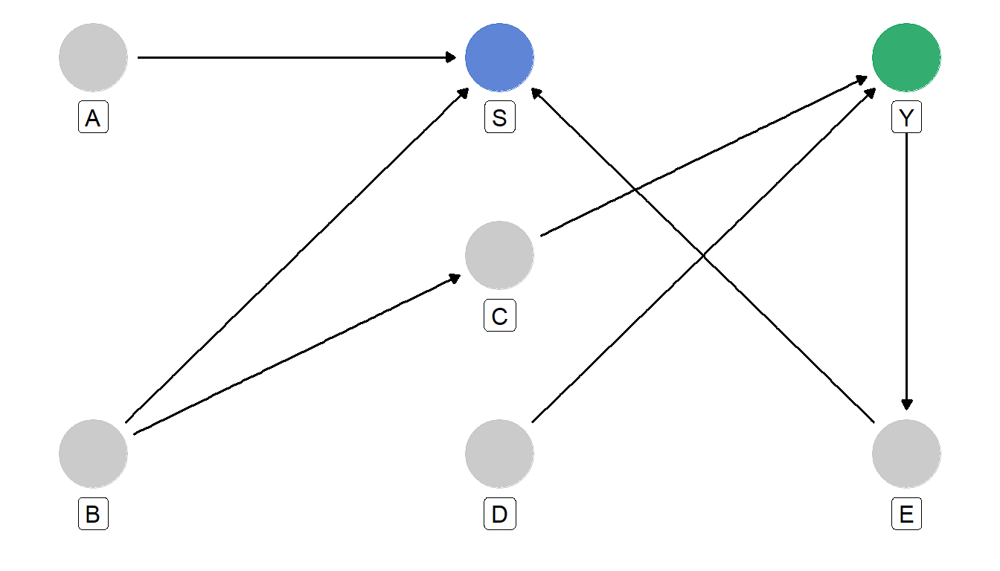

Representativitet som ett selektionsproblem
DAG
Analytisk klarhet
Representativitet
Abstract
Representativitet beskrivs ofta som en egenskap hos ett urval. Med hjälp av DAGs kan frågan istället formuleras som ett selektionsproblem. I denna del introduceras selektionsnoden S och hur beroenden mellan utfall och selektionsmekanismer kan användas för att förstå när inferens är möjlig, när justering kan hjälpa och när information gått förlorad.
Urval, bortfall och selektion
Representativitet diskuteras ofta som en egenskap hos ett urval:
Är urvalet representativt eller inte?
Men med hjälp av DAGs så synliggörs när det eventuellt är ett problem med bristande representation, när det inte är det och vad man eventuellt ska justera för för att kunna svara på de statistiska frågor man har. Allt detta genom att se representation som en fråga om selektion.
En selektionsnod
För att beskriva detta introducerar vi en selektionsvariabel \(S\).
\[ S=\begin{cases}1 & \text{om observationen observeras} \\ 0 & \text{om observationen inte observeras} \end{cases} \] När vi analyserar data arbetar vi i praktiken med de observationer där \(S=1\).
Det innebär att vi exempelvis kanske observerar:
\[P(Y \mid S=1), \; P(Y \mid X,Z, S=1)\;eller\;P(Y,X \mid S=1) \]
men vill dra slutsatser om:
\[P(Y), \; P(Y \mid X,Z)\;eller\;P(Y,X) \]
För att avgöra om vi kan anta att \(S\) är ignorerbart eller vad vi kan göra för att anta det så kan vi använda oss av DAGs.
När är selektion ett problem?
Att en variabel påverkar sannolikheten att observeras innebär inte automatiskt att vi får ett representativitetsproblem eller att vi måste justera för något.
Anta exempelvis:
\[Z \rightarrow S \;\;\;\;\; Y\]
där \(Z\) varken påverkar eller påverkas av utfallet \(Y\) som vi är intresserade utav.
Då finns ingen väg mellan \(S\) och \(Y\).
\[Y \perp\perp S\]
Trots att selektionen beror på \(Z\) förändras inte fördelningen av \(Y\).
Urvalet kan vara skevt med avseende på \(Z\), men fortfarande representativt med avseende på \(Y\).
Detta illustrerar en viktig princip:
Representativitet är alltid representativitet med avseende på något.
Att ett urval inte speglar populationen perfekt i alla avseenden innebär inte automatiskt att det är problematiskt för den fråga vi vill besvara.
När selektion skapar beroenden
Problemet uppstår när det finns en öppen väg mellan den variabel vi vill dra slutsatser om och selektionsmekanismen.
Exempelvis:
\[Y \rightarrow Z \rightarrow S\]
eller
\[Y \leftarrow Z \rightarrow S\]
I båda fallen finns en öppen väg mellan variabel vi är intresserade utav \(Y\) och selektionen \(S\) som skapar ett obetingat beroende.
Det innebär att de observationer som hamnar i datamaterialet systematiskt kan skilja sig från de observationer som inte gör det, med avseende på \(Y\).
Det är här eventuella representativitetsproblemet uppstår.
När justering är möjlig
Att det finns ett beroende mellan \(Y\) och \(S\) innebär inte automatiskt att inferens blir omöjlig.
I vissa fall räcker det att korrekt ta hänsyn till kända urvalssannolikheter eller observerade selektionsmekanismer. I andra fall krävs otestbara antaganden om varför vissa observationer saknas.
Två enkla exempel illustrerar skillnaden.
Exempel 1
Anta:
\[Y \leftarrow Kön \rightarrow S\]
Här påverkar \(Kön\) både \(Y\) och sannolikheten att observeras (\(S\)).
Om vi betingar vi på \(Kön\) blockeras vägen mellan \(Y\) och \(S\), vilket innebär att de blir obereonde givet kön.
Ett sådant exempel skulle kunna motsvara ett stratifierat urval där inklusionssannolikheten varierar mellan kvinnor och män. Om designen är känd kan vi ta hänsyn till detta utan att behöva göra några ytterligare antaganden om de observationer som saknas.
Exempel 2
Anta:
\[Y\rightarrow Z \rightarrow S\]
Här påverkar \(Y\) sannolikheten att observeras, men endast genom genom \(Z\).
Om \(Z\) observeras kan vi i princip beskriva den mekanism genom vilken selektionen uppstår och ta hänsyn till den i analysen.
I praktiken bygger sådana resonemang ofta på otestbara antaganden. Men otestbara antaganden kan vara mer eller mindre rimliga och mer eller mindre väl underbyggda.
Komplexa mekanismer förändrar inte grundidén
I praktiken är selektionsmekanismer sällan lika enkla som i våra exempel.
Vi kan ha strukturer som:
eller betydligt mer komplicerade nätverk.
Men logiken är densamma.
Det spelar ofta mindre roll exakt hur många steg eller variabler som ligger mellan \(Y\) och \(S\).
Det avgörande är om den relevanta informationen passerar genom något som faktiskt observeras och att justering på det faktiskt leder till ett oberoende.
När information har gått förlorad
I exempel 1 och exempel 2 kunde vi teoretiskt skapa ett oberoende mellan \(Y\) och \(S\) genom att ta hänsyn till relevant information.
Men det förutsätter att informationen faktiskt observeras.
Om vi i stället antar:
\[Y \rightarrow S\]
Här påverkar utfallet direkt sannolikheten att observeras.
Om denna struktur är korrekt finns det ingen observerad variabel som blockerar vägen mellan \(Y\) och \(S\).
Problemet är då inte att vi valt fel metod, utan att den information som skulle krävas för att beskriva selektionsmekanismen inte finns tillgänglig.
Ur ett DAG-perspektiv är det därför ofta mer givande att fråga vilken information som saknas än vilken metod som ska användas.
MCAR, MAR och NMAR
De klassiska begreppen MCAR, MAR och NMAR från bortfallslitteraturen kan förstås ur ett DAG-perspektiv som olika sätt att beskriva relationen mellan utfallet \(Y\), selektionsmekanismen \(S\) och den information som finns tillgänglig. Samtliga har berörts ovan.
Vid MCAR finns inget relevant beroende mellan Y och S.
Vid MAR kan ett sådant beroende beskrivas med hjälp av observerad information.
Vid NMAR återstår ett beroende även efter att all observerad information har beaktats.
Sett genom DAGs handlar dessa begrepp i stor utsträckning om vilka beroenden selektionsmekanismen skapar och om dessa kan beskrivas med hjälp av observerad information.
Kärninsikten
En stor del av representativitetsproblemet kan sammanfattas i en enda fråga:
Finns den information som förklarar selektionen observerad, eller har den gått förlorad?
Det spelar ofta mindre roll exakt hur selektionsmekanismen ser ut än om all relevant påverkan på selektionen går via något observerbart.
När den gör det finns ofta en väg till justering.
När den inte gör det kan vissa frågor vara omöjliga att besvara, oavsett hur avancerad analysmetoden är.
Det är därför värdefullt att fundera över sådana frågor redan vid designen av en undersökning eller datainsamling. I vissa fall kan det peka på behovet av ytterligare hjälpvariabler eller annan informationsinsamling. I andra fall kan det visa att vissa slutsatser helt enkelt inte kommer att vara möjliga att dra.
Avslutning
Ur ett DAG-perspektiv handlar representativitet därför mindre om huruvida ett urval är “bra” eller “dåligt”.
Istället handlar det om vilka mekanismer som avgör vad som blir observerat och vilka beroenden dessa mekanismer skapar.
Från ett DAG-perspektiv är representativitet därför främst en fråga om struktur: om selektionsmekanismen skapar beroenden mellan det vi vill veta något om och sannolikheten att observeras samt om dessa beroenden kan brytas med hjälp av observerad information.